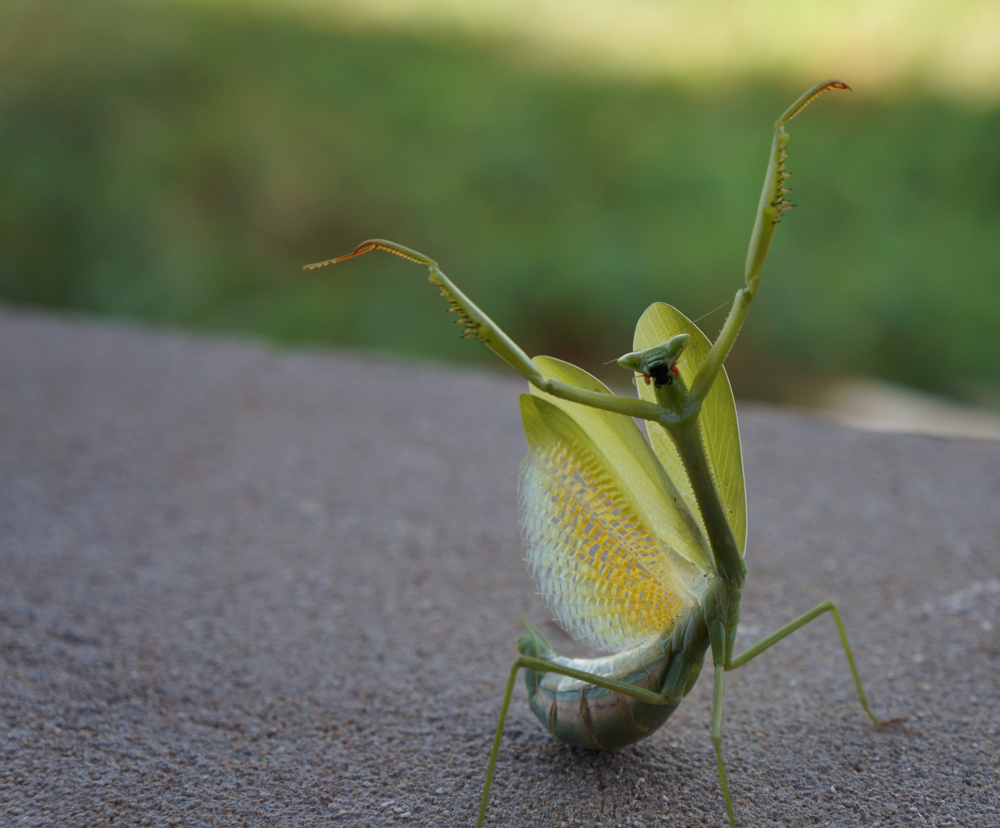
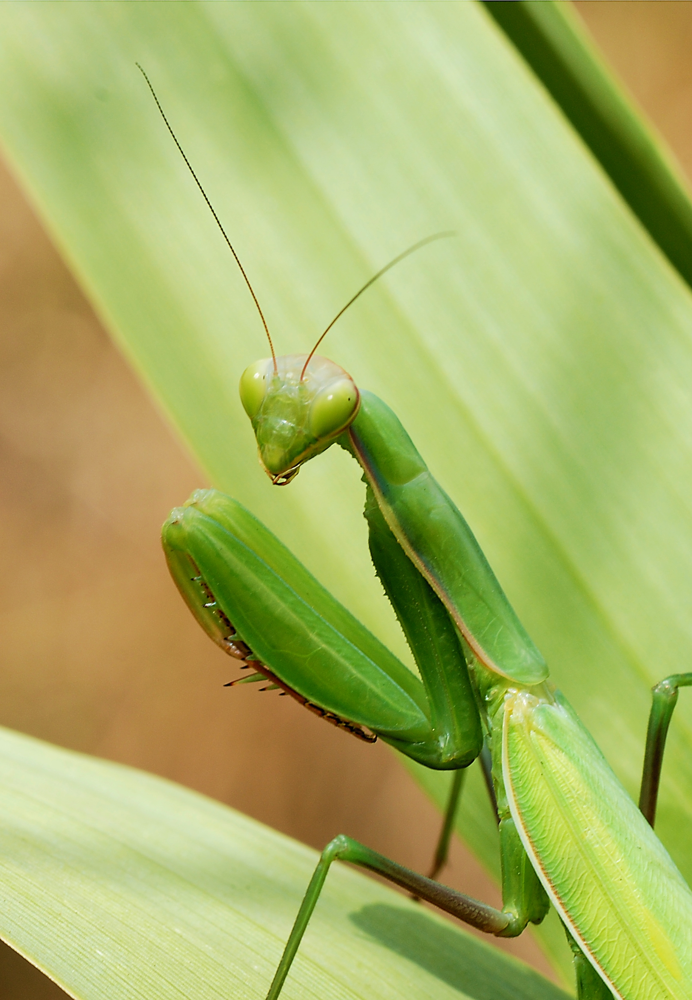

La Mante Religieuse est un insecte facilement reconnaissable grâce à ses pattes avant repliées,
qu'elle utilise pour attraper ses proies.
Son corps long et sa couleur verte lui permettent de se fondre facilement dans la végétation.
Elle vit principalement dans les prairies, les jardins et les zones chaudes et ensoleillées.
C'est une prédatrice qui se nourrit principalement d'autres insectes, comme les mouches, les criquets et les papillons.
La mante religieuse est également connue pour sa bonne vision et sa capacité à tourner la tête pour observer son environnement.
Elle reste souvent immobile avant de saisir rapidement une proie avec ses pattes avant.